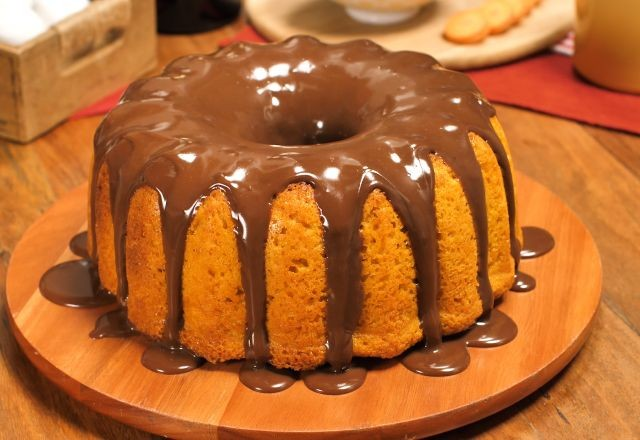

Ingredientes
- 1/2 xícara de óleo
- 3 cenouras médias raladas
- 4 ovos
- 2 xícaras de açúcar
- 2 e 1/2 xícara de farinha de trigo
- 1 colher de sopa de fermento em pó
- 1 colher de sopa de manteiga
- 1 lata de leite condensado
- 1lata de creme de leite
- 3 colheres de chocolate em pó
Modo de preparo
Em um liquidificador, adicione acenoura, os ovos e o óleo, depois misture.
Acrescente o açúcar e bata novamente por 5 minutos.
Em uma tigela ou na batedeira, adicionea farinha de trigo e depois misture novamente.
Acrescente o fermento e misture lentamente com uma colher.
Asse em um forno pré-aquecido a 180°C por aproximadamente 40 minutos.
Despeje em uma tijela a manteiga, o leite condensado, o creme de leite, o chocolate em pó, depois misture.
Leve a mistura ao fogo e continue até obter uma consistência cremosa, depois despeje a calda por cima do bolo.